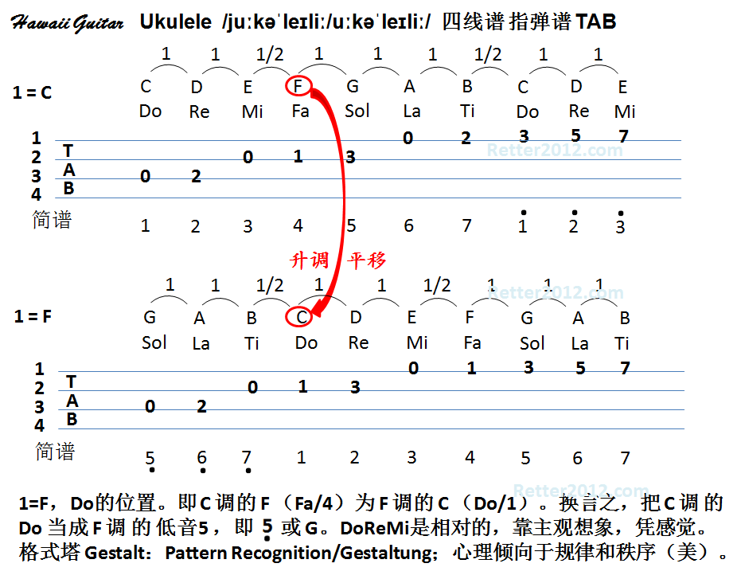

返回主页
升调降调原理（四线谱）

Art is ruled uniquely by the imagination.
贝多芬《欢乐颂》(An die Freude)
Ukulele各部分名称（2）
全音和半音（第几品格）
如何选择 Ukulele
Ukulele新手指南
没人敢挑战“孝悌忠信礼义廉耻”八个字，除了后现代的
要吸收中华民族修齐治平的文化营养。文化自信是“三个自信”的总源头。
中华文明源远流长，是世界上唯一没有中断的文明。“国家”是中华传统文化独有的概念，国与家紧密相连、不可分离。修身齐家治国平天下，修身为首要，治国从治家开始。只有修好身，才能理好家、治好国。中国人讲的家既指家庭，又包括家族，家族内外长幼有序，讲究道德礼仪。中华传统文化是伦理文化、责任文化，为国尽忠、在家尽孝，天经地义。
中华传统文化的核心就是“八德”：孝悌忠信礼义廉耻。这些就是中华文化的DNA，渗透到中华民族每一个子孙的骨髓里。迄今为止，还没有哪个人敢挑战这八个字。家国情怀和修齐治平、崇德重礼的德治思想，把社会教化同国家治理结合起来。要尊重自己的历史文化，把握文化根脉，取其精华、去其糟粕，坚守和弘扬优秀传统，让民族文化生命得以延续。
或者，参考：
Mud, Sweat and Tears
Man vs. Wild, Bear Grylls
Such a waste of talent. He chose money over power, a mistake nearly everyone makes. Money is the Mc-mansion that starts falling apart after 10 years. Power is the old stone building that stands for centuries. I cannot respect someone who doesn’t see the difference. Power is a lot like real estate. It’s all about location. The closer you are to the source, the higher your property value. Proximity 接近to power deludes 欺骗some into thinking they wield 运用支配，控制 it.
House of Cards
Underwood, Dobbs
或者，
江泽民在苏联的一次“走轴子”
江泽民喜文学、唱歌、弹琴，还唱京剧。江总书记在苏联工作学习期间还有一段唱京剧的趣闻。各国留学生在一起开联欢会，他演唱京剧片段，在当时条件下能找来一把胡琴伴奏很不容易了，没想到唱到一半时，琴弦松了，行话叫“走轴子”，只好绷紧琴弦对付着拉。没一会儿，“弦儿”和“唱儿”就合不上了，但是这些观众没听出来，照旧呱呱地鼓掌，还互相议论说，这京剧可太难唱了。江总书记每回谈到这段经历都哈哈大笑。
江泽民弹钢琴，朱F基拉二胡，都达到登台表演水平。
朱F基唱老生有板有眼 改错句手到擒来
朱F基总理也是从小就爱京剧。有一次朱总理看京剧《空城计》，其中孔明的唱词有两句是这样的：“论阴阳如反掌保定乾坤，东西征南北剿博古通今”。朱总理说，“这两句词后四个字唱错了，应该是‘论阴阳如反掌博古通今，东西征南北剿保定乾坤’”。演员们这才注意到原来一直唱的词错了。
湖南京剧团琴师张再峰谈起“票友”朱F基：“他像同台搭档一样亲切，他喜欢唱老生，唱得有板有眼，专业得让我吃惊。”
徐才厚在大学期间似乎没有突出的才华，唯一的特长就是有些音乐禀赋。五线谱看一遍，马上能清唱出来，徐才厚因此是学员8队的乐队指挥，例行开会、学员队拉歌比赛时，徐才厚永远站在拉歌指挥的位置上。
徐的拉歌指挥手势很特别，动作一板一眼，夸张式的僵硬，却颇有节奏感。徐在上面指挥，有的学员在下面发笑。私下里，滕问这位老乡怎么学到这种指挥方式的，徐回答说是自己琢磨的。除此之外，徐才厚在哈军工没有什么特别突出的，成绩属中上，也没有门门是五分。滕叙兖好像记得他当过一届副班长，还任过班里文娱委员，负责唱歌、排练小节目之类。
最后，看看90后的音乐素质（2014年11月05日 新京报）。
清华15门满分“学神”的素质教育
清华大学2014级电子系大四学生韩衍隽。生于1994年，2011年安徽高考状元。
20门科目中，除了1门98分、四门99分外，其余都是满分。韩衍隽爱好广泛，参加了腰鼓队、科协等协会，也玩过麻将，而且他从不熬夜，休息很规律，并不是“书呆子”。“很规律的休息保证了他的高效率，他一个小时的效率可能比得上我们四个小时。”
中国下一代教育被谁接管？
《美国精神的封闭》
三十年来最猛的三位中国大学校长
version:1.0; jobnet@188.com © retter2012.com